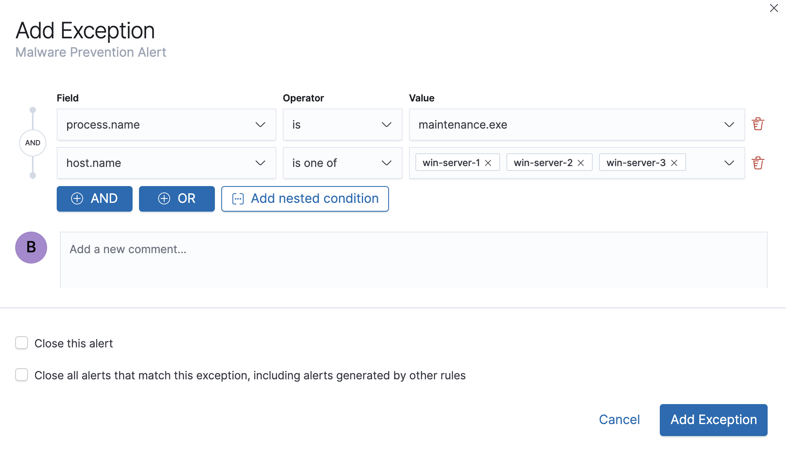
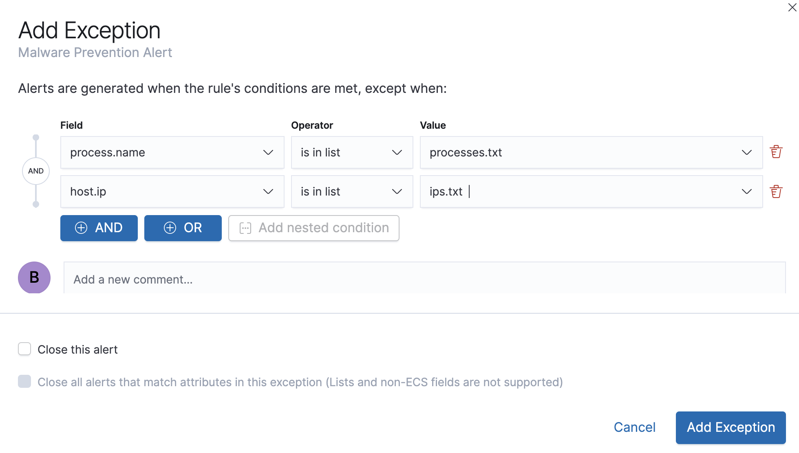
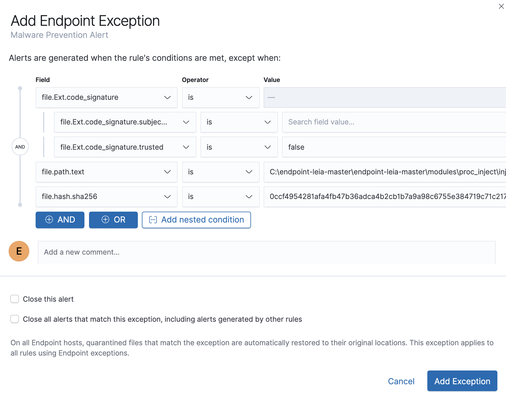

Rule exceptions and value listsedit
To prevent the creation of unwanted alerts, you can add exceptions to detection rules. Exceptions contain the source event conditions that determine when alerts are not generated. They provide a convenient way of allowing trusted processes and network activity to function without producing unnecessary noise.
You can add multiple exceptions to one rule.
When you add an exception to the Elastic Endpoint Security rule, you can select to add the exception to the Endpoint. When selected, the exception is added to both the detection rule and the Elastic Endpoint agent on your hosts.
In addition to defining exception queries for source event values, rule exceptions can be used with value lists. Value lists are lists of items with the same Elasticsearch data type. You can create value lists with these types:
-
keyword(many ECS fields are keywords) -
ip -
ip_range -
text
After creating value lists, you can use is in list and is not in list
operators to define exceptions.
Manage value listsedit
To create a value list for use with exceptions:
-
Prepare a
txtorcsvfile with all the values you want to use for determining exceptions from a single list. If you use atxtfile, newlines act as value delimiters.All values in the file must be of the same Elasticsearch type.
- Go to Security → Detections → Manage detection rules.
-
Click Upload value lists.
The Upload value lists window opens.

-
Select the list type (
Keywords,IP addresses,IP ranges, orText) -
Drag or select the
csvortxtfile that contains the values. - Click Upload list.
When the name of the file you are uploading already exists, the values in the new file are appended to the previously uploaded values.
To view, delete, or export existing lists:
- Go to Security → Detections → Manage detection rules.
- In the Value lists pane, click the required action icon.
Add detection exceptions to a ruleedit
You can add exceptions to a rule via the Rule details page or the Alerts table. When you add an exception, you can also close all alerts that meet the exception’s criteria.
When you select to close all alerts that meet the exception’s criteria, all matching alerts are closed, including alerts generated by other rules.
-
To add an exception via the Rule details page:
- Go to the Rule details page of the rule to which you want to add the exception (Security → Detections → Manage detection rules → <rule name>).
- Scroll down to the Trend histogram and select the Exceptions tab.
- Click Add new exception.
-
To add an exception via the Alerts table:
- Go to Detections (Security → Detections).
-
Scroll down to the Alerts table and click the more actions icon, and then select Add exception.
The Add Exception window opens (via Alerts table).

-
Add conditions that define when the exception prevents alerts. You can define multiple conditions with
ORandANDrelationships. In the example above, the exception prevents the rule from generating alerts when themaintenance.exeprocess runs onwin-server-1,win-server-2, orwin-server-3.You can use nested conditions. However, this is only required for these fields. For all other fields, nested conditions should not be used.
If you have created value lists, you can use them to exclude or include all values in a list with
is in listandis not in listoperators:
When using a list, all exception statements must use is in list and
is not in list operators.
-
You can select any of the following:
- Close this alert: Closes the alert when the exception is added. This option is only available when adding exceptions via the Alerts table.
- Close all alerts that match this exception, including alerts generated by other rules: Closes all alerts that match the exception’s conditions.
- Click Add Exception.
Add Elastic Endpoint Security exceptionsedit
Like detection rule exceptions, you can add Endpoint agent exceptions via both the Elastic Endpoint Security rule and its generated alerts. Alerts generated from the Elastic Endpoint Security rule have the following fields:
-
signal.original_event.module determined:endpoint -
signal.original_event.kind:alert
Additionally, you can add Endpoint exceptions via rules that are associated with Elastic endpoint rule exceptions. To associate rules, when creating or editing a rule select the Elastic endpoint exceptions option.
Exceptions added to the Elastic Endpoint Security rule affect all alerts sent from the Endpoint agent. Be careful not to unintentionally prevent some Endpoint alerts.
-
To add an Endpoint exception via the Rule details page:
- Go to the Rule details page and select the Elastic Security Endpoint rule (Security → Detections → Manage detection rules → Elastic Endpoint Security).
- Scroll down to the Trend histogram and select the Exceptions tab.
- Click Add Endpoint exception.
-
To add an exception via the Alerts table:
- Go to Detections (Security → Detections).
-
Scroll down to the Alerts table and, from an Elastic Security Endpoint alert, click the more actions icon, and then select Add Endpoint exception.
The Add Endpoint Exception window opens (via Alerts table).

-
If required, modify the conditions.
Exceptions with nested conditions describes when nested conditions are required.
-
You can select any of the following:
- Close this alert: Closes the alert when the exception is added. This option is only available when adding exceptions via the Alerts table.
- Close all alerts that match this exception, including alerts generated by other rules: Closes all alerts that match the exception’s conditions.
-
Click Add Exception.
An exception is created for both the detection rule and the Elastic Endpoint agent.
Exceptions with nested conditionsedit
Some Endpoint objects contain nested fields, and the only way to ensure you are
excluding the correct fields is with nested conditions. One example is the
process.Ext object:
{
"ancestry": [],
"code_signature": {
"trusted": true,
"subject_name": "LFC",
"exists": true,
"status": "trusted"
},
"user": "WDAGUtilityAccount",
"token": {
"elevation": true,
"integrity_level_name": "high",
"domain": "27FB305D-3838-4",
"user": "WDAGUtilityAccount",
"elevation_type": "default",
"sid": "S-1-5-21-2047949552-857980807-821054962-504"
}
}
code_signature.subject_name refers to the process signature not the
process name.
Only these objects require nested conditions to ensure the exception functions correctly:
-
Endpoint.policy.applied.artifacts.global.identifiers -
Endpoint.policy.applied.artifacts.user.identifiers -
Target.dll.Ext.code_signature -
Target.process.Ext.code_signature -
Target.process.Ext.token.privileges -
Target.process.parent.Ext.code_signature -
Target.process.thread.Ext.token.privileges -
dll.Ext.code_signature -
file.Ext.code_signature -
file.Ext.macro.errors -
file.Ext.macro.stream -
process.Ext.code_signature -
process.Ext.token.privileges -
process.parent.Ext.code_signature -
process.thread.Ext.token.privileges
Nested condition exampleedit
Creates an exception that excludes all LFC-signed trusted processes: